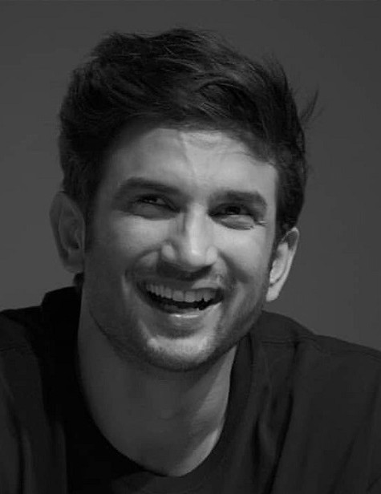

To be able to make statements, you need to be confident about what you think. You need to have a sense
of right and wrong

Biography
Sushant Singh Rajput (21 January 1986 - 14 June 2020) was an Indian actor known for his work in Hindi
cinema.[2] He starred in a number of commercially successful Hindi films such as M.S. Dhoni: The Untold
Story (2016), Kedarnath (2018) and Chhichhore (2019). Due to his contribution to the film industry,
he received a Screen Award and was nominated for the Filmfare Awards on three occasions. He appeared on
Forbes India's Celebrity 100 list twice since 2017.
Rajput began his acting career after dropping out of his engineering course at the Delhi College of
Engineering and entering the theatre industry in Mumbai. He moved on to feature in Hindi television
serials, his debut show was the romantic drama Kis Desh Mein Hai Meraa Dil (2008), followed by the lead
role in the soap opera Pavitra Rishta (2009-2011). He made his film debut with the film adaptation Kai
Po Che! (2013) which became a critical and commercial success.